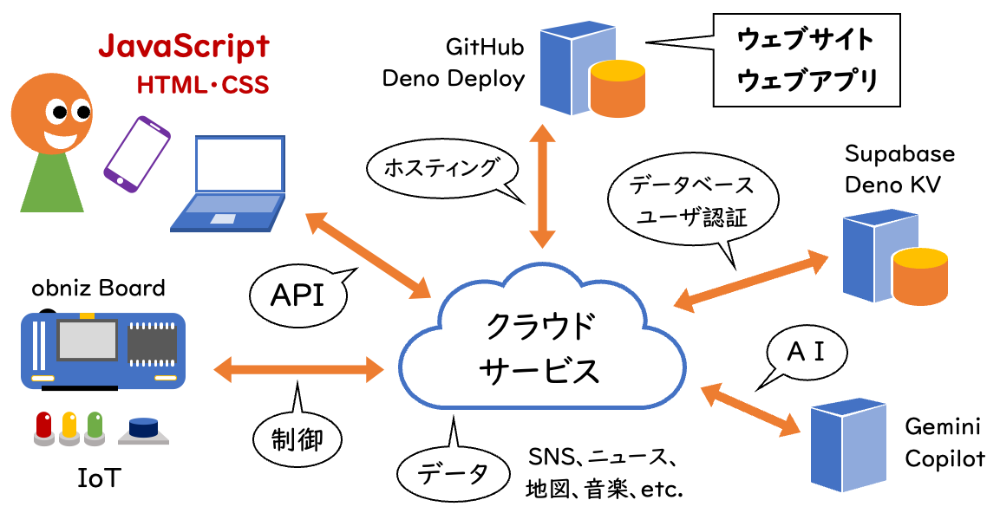

OJK Lab.
尾関ゼミは「ウェブ技術＆インタラクション研究室」として、デザイン思考に基づいたアプリケーションの企画立案・開発をチームで実践できる力を身につけ、ジェネラティブアニメーション作品・インタラクティブメディア作品・ウェブアプリケーション開発などに挑戦します。

大きな流れは以下のとおり：
- 2年後期
- 青山学院大学の村田ゼミとの遠隔共同アイデアソン（6〜8週）
- ポートフォリオサイト制作
- 3年前期
-
「プログラミングB・Ⅰ」をベースにジェネラティブアニメーション技術の基礎を勉強
-
青山学院大学の村田ゼミとの遠隔共同アイデアソン（デザイン思考／8週）
- 夏季休暇
- 遠隔共同アイデアソンの成果物をウェブページ化
- 3年後期
-
「プログラミングB・Ⅱ」をベースにインタラクティブメディア技術の基礎を勉強
- 青山学院大学の村田ゼミとの遠隔共同アイデアソン（6週）
- 卒業研究の目標設定と関連事例の調査
- 4年
- 就活を優先しつつ卒業研究を進める
尾関ゼミで使用する主なツールを紹介します。
開発環境やツールを絞っているのは、尾関が速やかにサポートできるようにするためです。難易度を問わなければ、ウェブ技術だけでもほとんど何でもできます。その他の技術については書籍を購入することで対応します。
- Figma
- パワポ感覚で使えるプロトタイピングツール
- HTML／CSS
- 就活にも利用できるポートフォリオサイトを作ります
- JavaScript
-
アプリ開発もジェネラティブアニメーションもインタラクティブメディアも、尾関ゼミのプログラミング言語はJavaScript一本でいきます
- 生成AIなどもJavaScriptから利用します
- GitHub
- 本格的なアプリ開発では必須の開発プラットフォーム
- Google Apps Script（GAS）
- フォームやスプレッドシートを使ったアプリはGASが手っ取り早いです
- obniz（オブナイズ）
-
これ単体でインターネットにつながる国産マイコン、SNSとの連携もできます
- micro:bit（マイクロビット）
-
教育工学に関する卒業研究では学校で使われるこのマイコンを使います
活動成果 △
以前にIoTをメインにやっていた頃は動画の形にしてYoutubeに公開していました。その後、ウェブアプリに主軸が移っているのでGitHubでアプリを公開しています。2026年に大学を移ったので、学科の方針を鑑みつつ、学生さんの希望に応じて方向性を決めていきたいと思います。
2025年度
こちらにもまとめています。
前期の青山学院大学との遠隔共同アイデアソン
2024年度
こちらにもまとめています。
前期の青山学院大学との遠隔共同アイデアソン
2023年度
こちらにもまとめています。
前期の青山学院大学との遠隔共同アイデアソン
後期の青山学院大学との遠隔共同アイデアソン
2022年度
こちらにもまとめています。
前期の青山学院大学との遠隔共同アイデアソン
2021年度
こちらにもまとめています。
前期の青山学院大学との遠隔共同アイデアソン
ポートフォリオサイト △
全員作成していますが、一部をピックアップしています。
卒業研究テーマ △
ブラウザーで閲覧できるシンプルなアプリにはリンクを張っています。ノーコードツールで作ったものやバックエンドプログラムの必要なアプリは残念ながら非公開です。一部の動画は武庫川女子大学のアカウントでのみ視聴可能です。
2025年度
-
生成AIのプログラミング教育利用における学修効果を損なわないプロンプトデザインの検討
-
音楽×ジェネラティブ・アニメーションを題材とした女性向けプログラミングアイデアソンの実践
- 子どものお片づけを促すアプリケーションの考案
- 小型人形の舞台演出を通したプログラミング教材コンテンツの考案
- 合成音声ソフトウェアを用いた関西弁表現の検討
- 成／加工音声がVlogの再生回数等に与える影響について
2024年度
-
日本語の入力文章から英語整序問題を生成する学習アプリの開発movie
-
夫婦の絆を深めるリストアプリの開発movie
-
高校１年生を対象とした情報「ｎ進数の変換」の苦手克服movie
-
伝言ゲームの仕組みを取り入れたプログラミング学習の提案movie
-
生成AIを活用したチクチク言葉への対応movie
-
算数の「速さ」計算の視覚化アプリmovie
-
若い女性をプログラミングに惹き込むジェネラティブアートアイデアソンの企画movie
- Spotifyの再生数とテレビ露出の関係についての一考察
-
メタバースを利用した再現シーン画像によるライブコンサートでの視覚的迷惑行為の調査movie
2023年度
-
岡山県の制服産業における脱炭素社会に向けたビジネスモデル実現のためのウェブアプリのUI設計
-
被施術者の意図に近いネイルデザインを生成AIに出力させるプロンプトデザインの検討
- 数値による感情の可視化による日々の感情の整理についての一検討
- 機械学習を用いて外見が好みの車を見つけるウェブアプリの制作
- プログラミングの反転授業における学生のChatGPTの利用に関する調査
- X（旧Twitter）上でのグッズ交換のための取引相手の評価アプリ
-
大学における初対面時の交流をサポートする大学生向け名刺交換アプリ
- コンビニ限定グッズの在庫数共有アプリ
2022年度
-
駆け出しアーティストを応援するための路上ライブ野外フェス化アプリ
-
身近な男性に月経を理解してもらうための月経症状当てクイズアプリ
link
- 高齢者と家族の遠隔コミュニケーションを支援するIoTボタン
-
Twitterを用いたアウトプット型学習の可視化の改善と評価movie
- セルフレジにおける買い物袋削減による環境への貢献度の可視化
-
紙のチケットのようにファイリングできる電子チケット保管アプリmovie
- 大学の中規模団体のための日程調整アプリ
-
動物譲渡会後のアフターフォローを円滑にするアプリの試作movie
-
問題文のパターンから順列と組み合わせを区別する学習支援アプリmovie
- 子どものスマホ依存対策のためのスマホ使用時間ごほうびシステム
-
プログラミングトイ「キュベット」を用いた幼い子どもたち向けアイデアソンの提案
-
職場のジェンダー平等意識向上のための目安箱アプリmovie
- IoT技術による機能拡張版ヘルプマークの提案
2021年度
- アイドルをTwitter被害・誹謗中傷から守る告発アプリ
- ウェブ入門科目を改善するための調査とコンテンツ制作
- IoTを使用した一人暮らし女性のための防犯システムの試作
- ゲーミフィケーションを利用したITパスポート試験学習アプリ
-
天候に合わせたヘアアレンジ推薦アプリ
link
-
エビングハウス忘却曲線に基づく罰則付きTODOリマインドアプリの試作
-
尋ね鳥の似顔絵簡易作成ツール
link
2020年度
-
配列をいじって学べるプログラミング学習補助アプリlink
- 既存の教科に組み込んで学べるプログラミング教材の提案
-
「動く点P」を実際に動かして理解する学習補助アプリlink
- 画像認識APIを利用した遠隔カメラシステムの試作
- 中小規模の製菓会社のTwitter運用に関する一考察
- 講堂の座席割り振りアプリの試作
-
ソーシャルメディアへの進捗報告によるアクティブラーニングの学習過程の可視化
- 絵画鑑賞時にBGMが与える印象変化についての一検討
- プログラミングの動作を理解するためのアニメーションの制作
- CDジャケット写真を用いた音楽推薦アプリの試作
- 気になるお店を登録できる地図アプリの検証
2019年度以前
FAQ △
- プログラミングができなくてもゼミ活動はできますか？
-
3年生のメインになる遠隔共同アイデアソンではプログラミングは使いません。でも最近は生成AIでプロトタイプアプリを作ってアイデアを検証できるようになってきました。卒業研究でもAIを活用してよいと思いますし、プログラミングを必ず使用しなければならないということはない（ような）ので、プログラミングを避けて通ることは可能です。しかし、ゼミ全体で授業的に進めていく活動はプログラミングが中心になりますし、私の3年授業を履修してもらうことになりますので、プログラミングが“嫌い”という人には辛いと思います。ちなみに、うまく動かなくてもコーディングすること自体が好きだったり、がんばって勉強したいという意欲のある人は、たとえ“苦手”であっても大丈夫です。
- ウェブ技術以外の技術は学べますか？
-
尾関ゼミが「ウェブ技術（JavaScript／p5.js）」に絞るのは、ゼミと（私の）授業で足並みを揃えてひとつの技術体系を学んでいくことによって、卒業研究でアプリ開発や作品制作が自力でできるところまで持っていきたいからです。また、技術を絞ることで私のサポートも迅速かつ具体的に行なえます。卒業研究を通して、何か一つでも「○○ならある程度できます」と卒業時に言えるようになってほしいと思っており、本学科の場合、そのためには技術を絞って集中的に学んだほうがよいと考えています。まあ、最近のウェブ技術はすごいので、難易度を問わなければJavaScriptだけでほぼ何でもできるのですが…
- ゲームは作れますか？
-
卒業研究でゲームを作ることは（学科が許しているのであれば）私としては構いません。ただし、JavaScript以外のプログラミング言語や開発環境になると、できるサポートは書籍を買ってあげるくらいになります。JavaScriptにもゲーム制作に役立つライブラリーはいくつかありますので、まずはそれを使って自分のやりたいことができないか検討してください。なお、ゲーム制作（だけではないですが）で大事なことは技術よりも企画とレベル調整ですが、そのあたりは私は全くの門外漢なので手厚いサポートを期待されると厳しいかなと思います。
- デザインは学べますか？
-
ゼミでデザインを教えることはありませんし、私も専門的なことはあまりわかりません。ただ、デザイン系の書籍は貸し出せますし、最近はデザインを学べるインターネットサービスが増えてきていますので、独学することはできます。尾関ゼミにかぎらず、ゼミで必要となる知識や技術は独学するのが基本だと考えています。私以外の先生にオフィスアワーに質問にいってもよいと思いますし（その権利は常にあります）、特定のゼミに入らないと学べないことというものは無いと個人的には思っています（“体験”できないことはあります）。
- 卒業研究でウェブサイト制作や映像制作はできますか？
-
卒業研究には多少なりとも“研究”の要素がなくてはならないと考えています。したがって、単なるウェブサイトや映像の制作は尾関ゼミでは不可としています。ただし、その作品が実際の社会の役に立つものであり（どこかで使用されることを真剣に目指して制作するなど）、対象からの何かしらフィードバックを得て効果を検証するならば、研究としても成立すると思います。私を説得してみてください。
- サブゼミなど課外時間の活動はありますか？
-
サブゼミなど、強制参加の時間外活動は基本的にありません。ただし、他大学との遠隔共同アイデアソンなどでは、ゼミ活動の一環として課外時間に（主にオンラインで）集まることはあります。ゼミ活動が週1コマというのは他大学と比較すると極端に短いので、他大学の学生の経験値と合わせていきたいのなら課外時間にも自主的にゼミの活動を確保すべきだとは思います。
- ゼミの雰囲気はどんな感じですか？
-
ゼミの雰囲気は「教員の雰囲気」と「メンバーの雰囲気」で決まりますが、尾関ゼミは私の影響力が弱いので、ほぼメンバーで雰囲気が決まります。ですので、学年で一番騒がしいんじゃないかと思う代もあれば、一番大人しいんじゃないかと思う代もあります。とはいっても全員が騒がしいとか全員が大人しいということはなく、どの代にも両方のタイプが混ざっていて、適度な距離感を保ちながら和やかにやっているように見受けられます。2015年にゼミを担当してから大きなトラブルは一度もないと思いますし、脱落者もいません。
- 就活ではゼミのどのような活動内容が話せますか？
-
就活で話せる内容は3年次の遠隔共同アイデアソンの内容が主になるかと思います。遠隔共同アイデアソンは（少人数ですが）チームで行いますので、自分の役割をきちんと意識して行動しないと就活でアピールできるネタは生じません。ただ、「コンテストで受賞するなど、何かしら大きなことを成し遂げないと就活では話せない」と思っている学生さんが多いのですが、そんなことはありません。採用側が知りたいのは成果ではなく、そのプロセスで何に気づき、何を考え、どう行動したかです。それは些細なことでも構いません。しかし、そのエピソードが自分の特徴や長所を主張することは大切なので、遠隔共同アイデアソンの中で“意識”して行動してください…ということです。
Copyright © 2019-2022 尾関 Lab. All Rights Reserved.